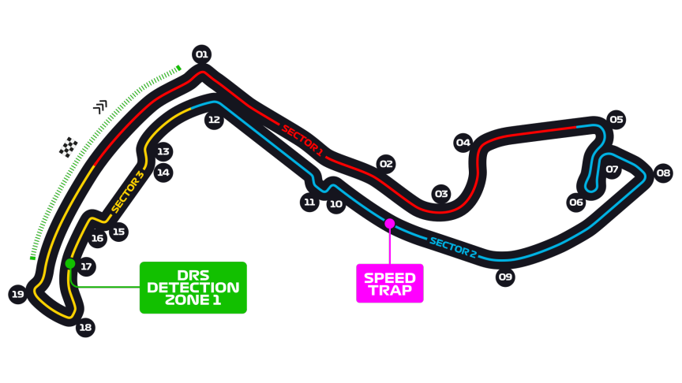

Grand Prix de Monaco
Informations
Nom du circuit
Circuit de Monaco
Lieu
Monaco (Monaco)
Nombre de tours
78
Longueur du circuit
3.337 km
Distance de course
260.286 km
Dernier vainqueur
Max Verstappen
Classement nombres de victoires sur ce circuit
6 victoires - Ayrton Senna
5 victoires - Graham Hill
5 victoires - Michael Schumacher
Le saviez-vous ?
Le circuit est le plus lent de tout le calendrier de la Formule 1. Effectivement, la piste est très étroite et particulièrement technique, ce qui rends les dépassement en courses très difficilles.
C'est le seul GP de moins de 300km au total. Comme le circuit est lent les organisateurs ont décidé de réduire le nombre de tour afin que la durée total de l'évenement ne soit pas trop long.
Un diamant d'une valeur de 270 000 euros a été perdu sur le circuit ! En effet lors de l'édition 2004, pour une opération marketing autour de la sortie du film "Ocean's Twelve", l'écurie Jaguar Racing a un diamant sur le bout de l'aileron avant de leur 2 monoplaces. Sauf que dès le premier tour le pilote Christian Klien percute un mur de pneu !
A l'arrivé des équipes de Jaguar le diamant avait déjà disparu..!
A ce jour, le sort de ce diamant reste toujours inconnu.